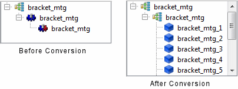

The MCAD Bridge
data tree enables part selection, similar to the Simcenter Flotherm Project Manager.
Procedure
- Select the assembly.
The property sheet the name
associated with the assembly in the display area and this is editable.
- In addition, the data tree lists all the assembly
component parts and can be used to check for full realization of
the assembly into Simcenter Flotherm objects.
To select an item, click on an item in the data tree.
The item is selected
in the GDA and its property sheet is opened. For MCAD parts, the
property sheet provides realization and volume information for the selected
part.
Results
A fully realized assembly is
indicated by Simcenter Flotherm assembly
icons as shown in Figure 1.
Figure 1. MCAD Parts Before
and After Conversion